STRAX-Wallet Cold-Staking¶
We recommend setting up two separate wallets on separate systems to run your cold staking setup.
Your hot wallet needs to be online 24/7 and has staking enabled to cold-stake. You can host it yourself, or you can use a third-party hot staking node provider.
Your cold wallet can and should be created and managed offline.
The setup process requires you do go back and forth between an online and offline wallet with data. We recommend using a thumb drive that you can use to share a text file.
Please note: We do not support any form of setup that has multiple wallets on one computer.
Creating a Hot-Wallet (Online)¶
We will be using an online, fully synchronized wallet as the hot staking wallet.
Create a new wallet using the Stratis wallet user interface.
In our example, we will be using a wallet named “HotStakingWallet1”.
After decrypting the hot wallet; navigate to the Cold-Staking tab within the STRAX Wallet.
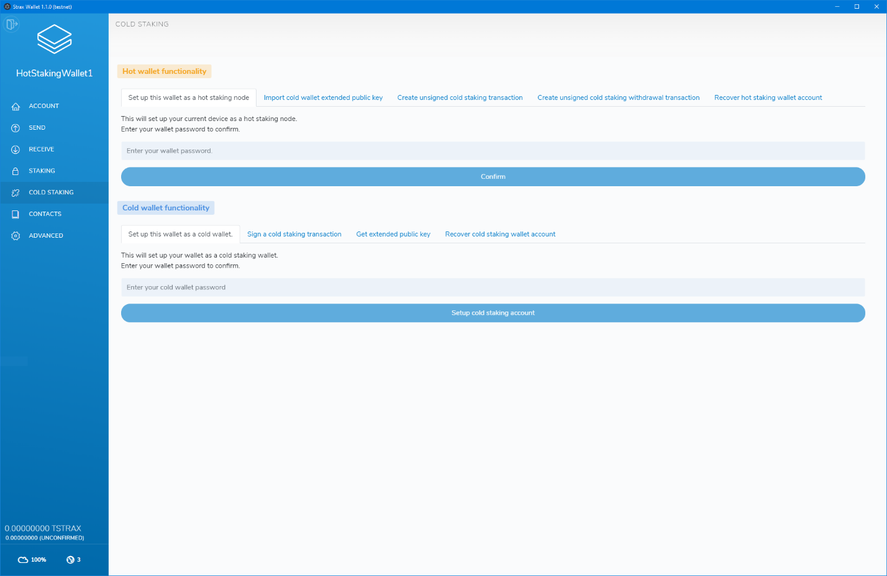{kind=link}
We will set up the wallet as a hot staking wallet first. In the “Hot wallet functionality” section, click the “Setup this wallet as a hot staking node” tab, enter your password and click confirm.
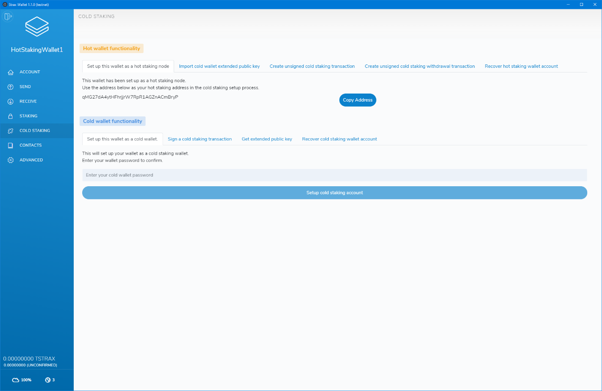{kind=link}
After confirming and successfully setting up the wallet as a hot staking wallet, the page will display your hot staking address. Keep this address at hand as we will use it to set up cold staking.
We suggest keeping a text file with all the necessary data on a thumb drive and will assume you do too throughout the rest of the setup process.
Please note: If you are not using a third party, this wallet will have to be online and unlocked for staking to actively cold stake. Staking can be activated in the “staking” page by entering your wallet password and clicking the unlock button.
Using a third-party service as your hot node¶
If you do not want to run a hot wallet node 24/7, you can opt to use a third-party service to run it for you. We do not officially endorse any third party services that offer this service.
When using a third-party service, they will give you the hot staking node address you can use to set up your cold staking wallet. Do not send funds to that address under any circumstance!
Please note: You still require an online and synchronized wallet to complete the setup process.
Setting up your cold wallet¶
As mentioned at the start of the setup process, we will be using a separate wallet on a different computer to set up the cold wallet. The computer should be offline; thus, the wallet is not connected or synchronized.
In our example, we will be creating a new wallet called ColdStakingWallet1.
After decrypting the wallet go to the receive tab to get a new address to fund your wallet. Fund the address with the number of tokens you want to use for cold staking.
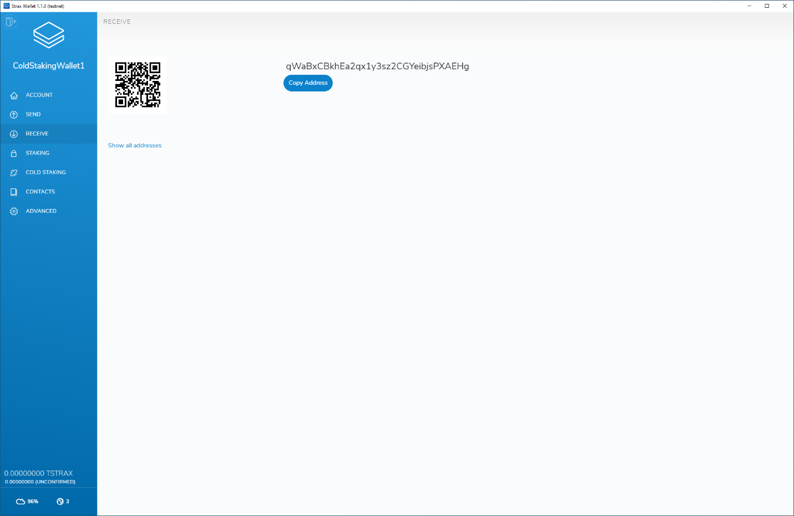{kind=link}
Since your wallet is offline and not synchronized, you will not see your transaction history or total balance. Please use the block explorer to check if your address was successfully funded: https://chainz.cryptoid.info/strax/
{kind=link}
After confirming and successfully setting up the wallet as a cold wallet, the page will display your cold staking address. Save this address in your text file on your thumb drive as the cold staking wallet address.
In addition to the cold-staking address, we also need the Extended Public Key of your cold wallet. Head over to the “ADVANCED” tab and click “Copy key to clipboard” at the end of the Extended Public Key section.
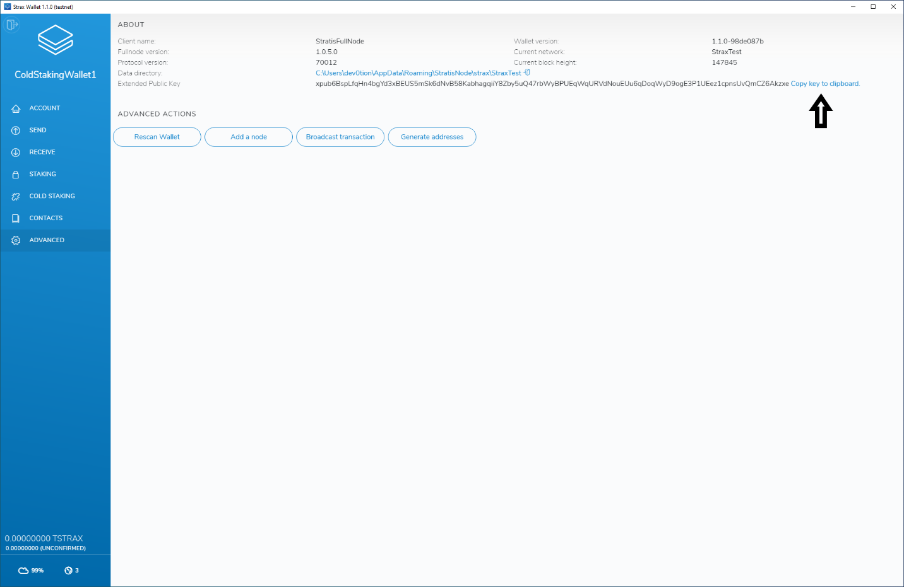{kind=link}
Save the extended public key in your text file on the thumb drive.
This is an example of how the current text file should look; please note that your values will be different.
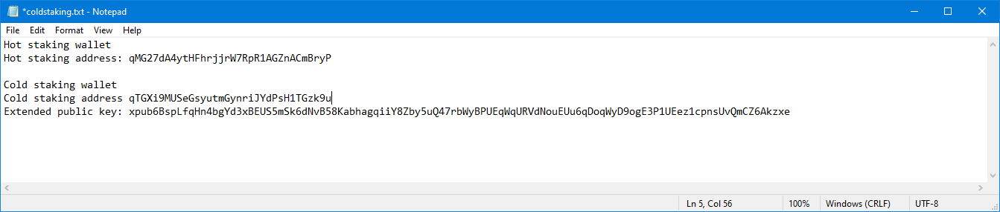{kind=link}
Because our cold staking wallet is offline, we can not create the cold staking setup transaction. Therefore we will need an online and synchronized wallet to complete the process. You can use any online wallet on an online system; it does not have to be the hot staking wallet we created in the first step.
We will need the data that we saved in the text file for the next steps, so you should switch your thumb drive from the offline computer to your online computer that contains an online wallet.
In the online wallet, go to the “COLD STAKING” page and click the “Import cold wallet extended public key” tab. Please select the “I want to import an extended public key to set up cold staking” option in the dropdown. The form will also ask you for a wallet name, the extended public key and the cold wallet creation date.
Please note: The wallet name does not need to match your cold wallet name; it can be anything you want, but please write it down as we will need it in the next step.
Use the correct data and click “Import”. On success, you will see a message on the bottom of your screen.
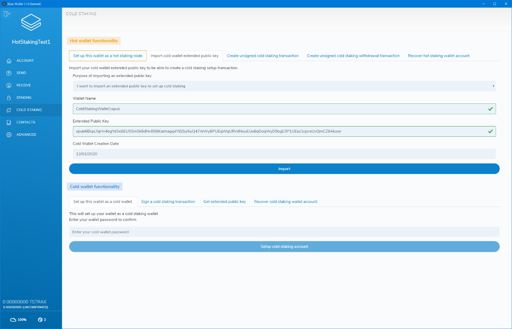{kind=link}
After importing the extended public key, click the “Create unsigned cold staking transaction” tab.
Complete the form with the data from your text file.
Set the amount you want to stake; we recommend using the entire balance that was used to fund the cold staking wallet.
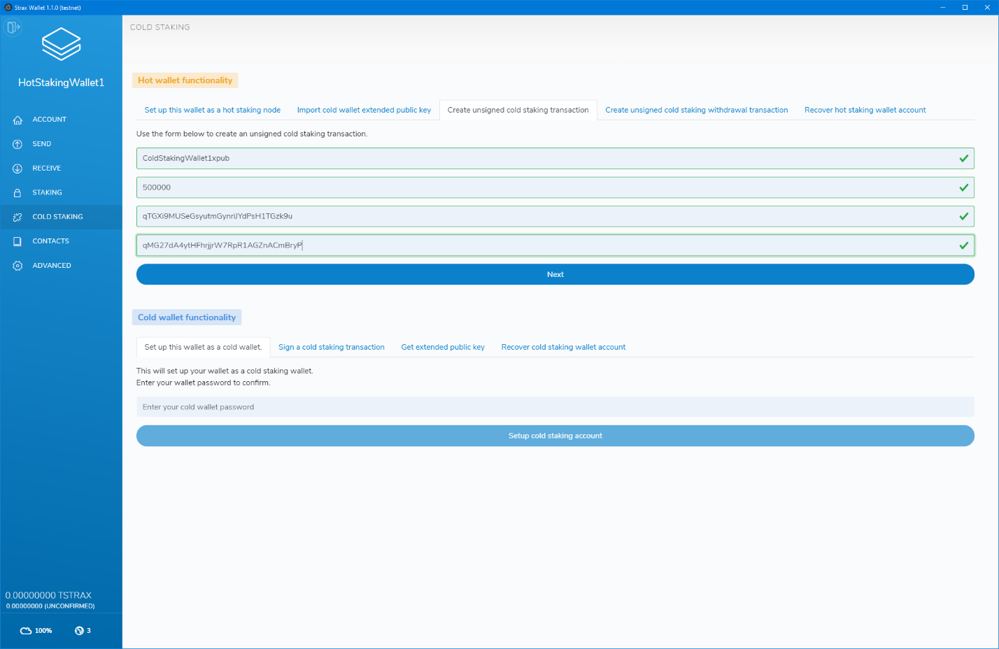{kind=link}
After entering the correct values, click “Next”.
On this page, carefully check and confirm the cold-staking setup values. If everything checks out, click “Next”.
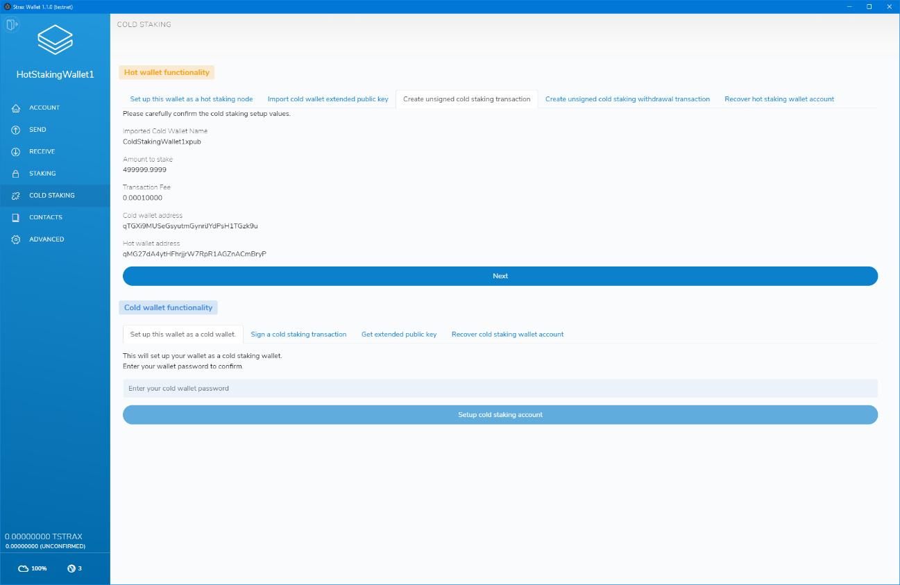{kind=link}
If all data was entered correctly, the process will now show you a very long encoded transaction that you can copy. Copy the encoded transaction into your text file on your thumb drive.
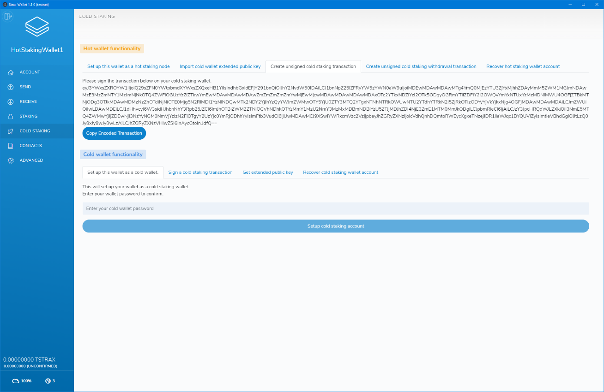{kind=link}
We currently have the following data in our text file:
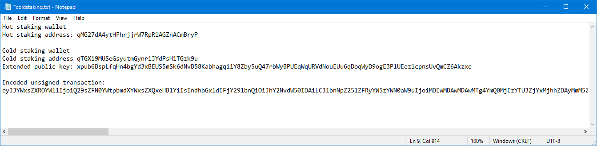{kind=link}
The encoded transaction is an unsigned transaction, and you will need to head back to the offline computer with your thumb drive to sign the transaction.
Open your cold staking wallet, go to the “COLD STAKING” page and in the “Cold wallet functionality” section click the “Sign a cold staking transaction” tab.
Paste the entire encoded transaction into the form and enter your password, then click “Confirm.
Please note: The encoded transaction is very long, make sure you copy it entirely.
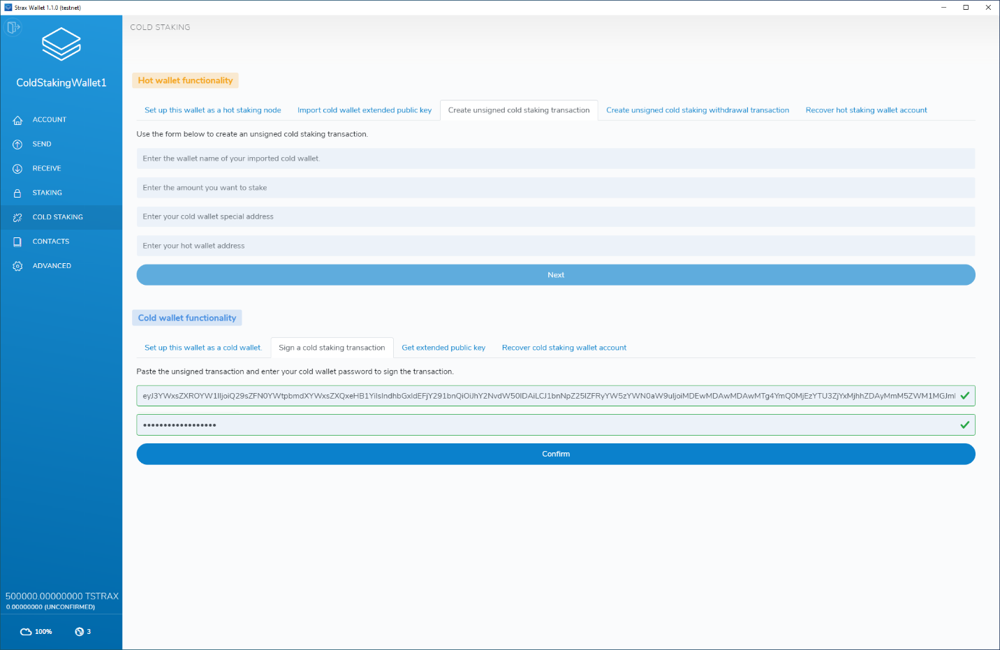{kind=link}
Copy the transaction hex to the text file of your thumb drive.
Our text file currently looks like this:
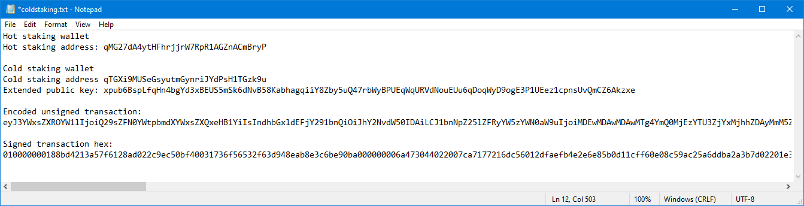{kind=link}
As the final step, we need to broadcast this transaction on an online node. Take your thumb drive back to the computer containing an online wallet, head over to the “ADVANCED” page and click “Broadcast transaction”
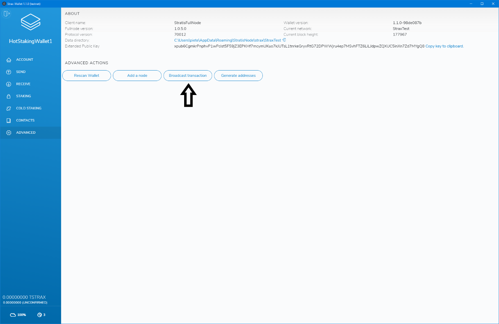{kind=link}
Copy the signed transaction hex into the “Transaction Hex” input and click “Broadcast Transaction”
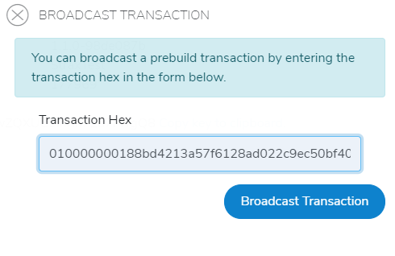{kind=link}
If all went well, your wallet should display a “Transaction broadcasted successfully” message on the bottom of the page.
{kind=link}
Congratulations, you have now successfully set up cold staking.
Please note: You will only get rewards if your hot staking node is online and has staking enabled.
Withdrawing from Cold-Staking¶
To withdraw your cold staking balance, you need access to a synchronized online wallet and your cold wallet.
We will start with getting the extended public key of the cold staking account of your cold wallet. Open your cold wallet and head over to the “COLD STAKING” page.
In the “Cold wallet functionality” section, click the “Get extended public key” tab.
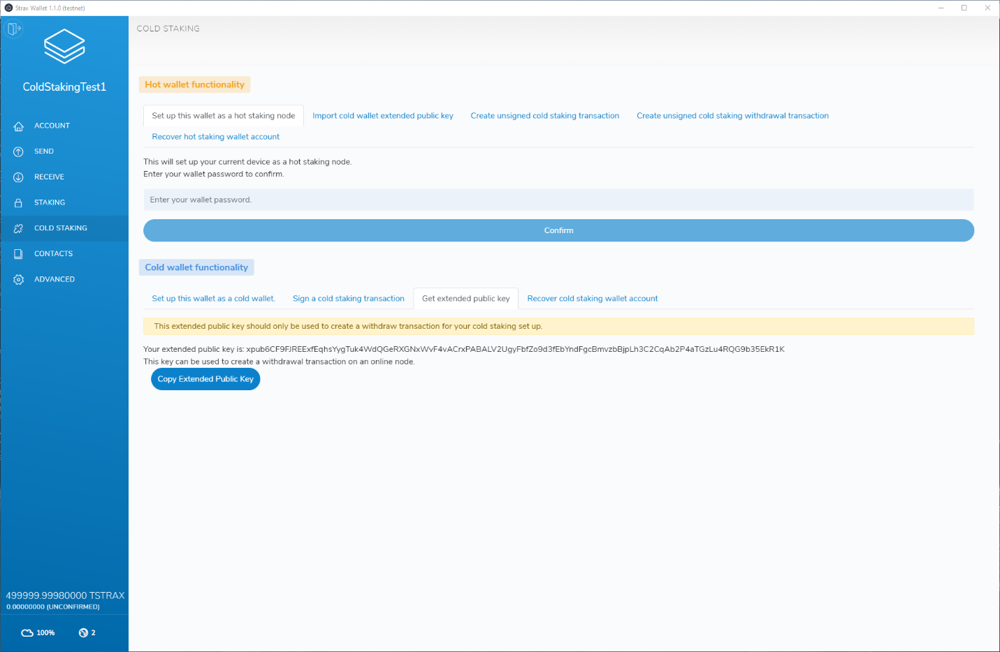{kind=link}
Copy the extended public key and save it into a text file on a thumb drive.
In the dropdown select “I want to import an extended public key to withdraw from my cold staking wallet”.
Enter a wallet name, paste the cold wallet extended public key generated in the previous step, enter the creation date of your cold staking wallet, and click “Import”.
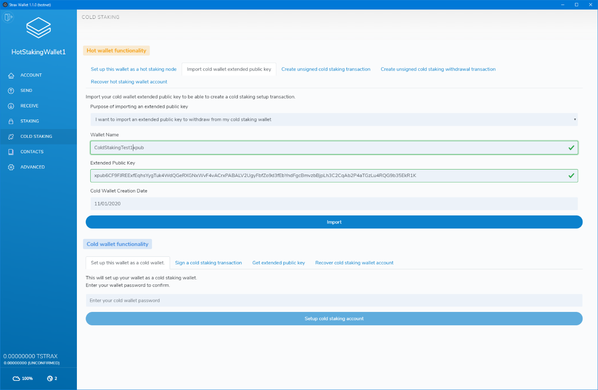{kind=link}
After importing the extended public key, head over to the “COLD STAKING” page and click the “Create unsigned cold staking withdrawal transaction” tab.
Enter the wallet name you chose in the previous step.
Enter the amount you would like to withdraw from the cold staking setup.
Enter the destination address you want to funds to be sent to.
After populating all fields, click “Estimate fee” to estimate the fee of the transaction.
After fee estimation has completed, click “Create unsigned withdraw transaction”.
Generating the unsigned withdraw transaction can take a while and, it will result in a long string made up of different characters.
Scroll down to the bottom of the page and click “Copy unsigned transaction”. Paste the entire text into a text file on a thumb drive.
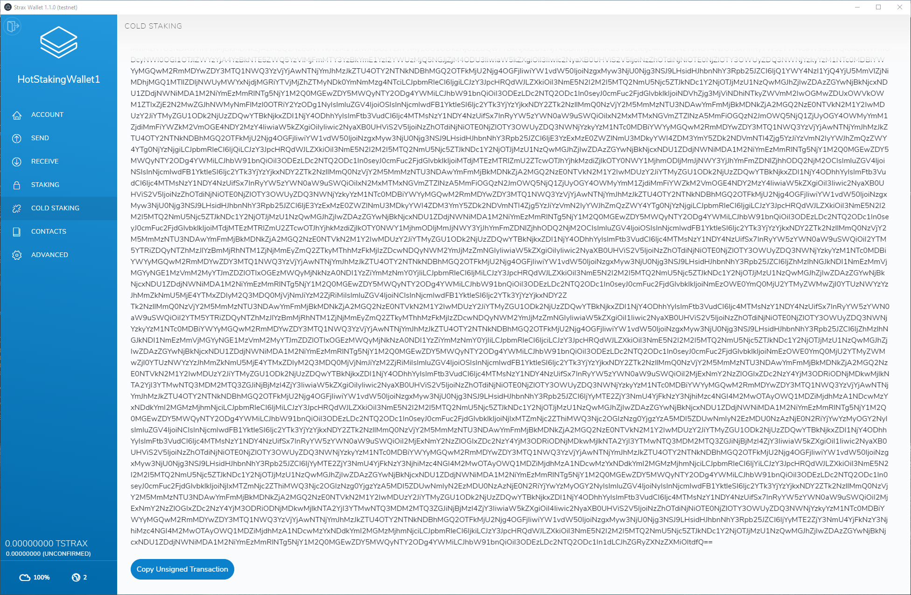{kind=link}
Now that we have generated an unsigned transaction, we need to sign the transaction on the cold wallet. Move your thumb drive back to the computer that holds the cold wallet and open your cold wallet.
Head over to the “COLD STAKING” page and in the “Cold wallet functionality” section click the “Sign a cold staking transaction” tab.
Paste in the unsigned transaction generated in the previous step, enter your cold wallet password and click “Confirm”
Generating the transaction can take a while, but will result in a transaction hex that we can sign on an online node. Copy the transaction hex and paste it into a file on a thumb drive.
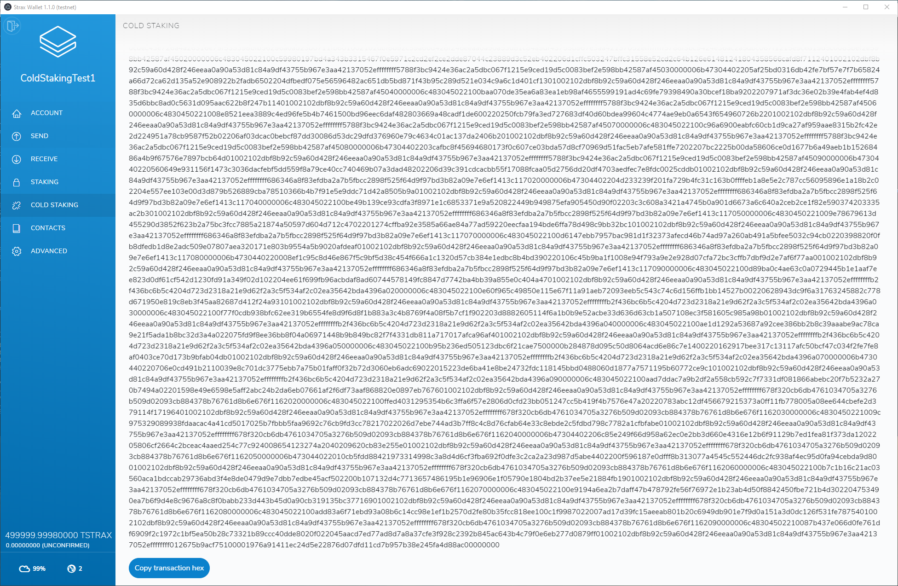{kind=link}
The final step is to broadcast the transaction on an online wallet. Open the wallet and head over to the “ADVANCED” tab then click the “Broadcast transaction” button.
Paste the transaction hex into the box and click “Broadcast Transaction”
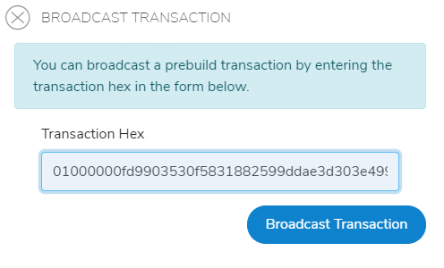{kind=link}
Broadcasting can take a while on large transactions. However, if everything went well, you will see a “Transaction broadcasted successfully” message at the bottom of your wallet.
Your funds are now withdrawn from your cold staking wallet.